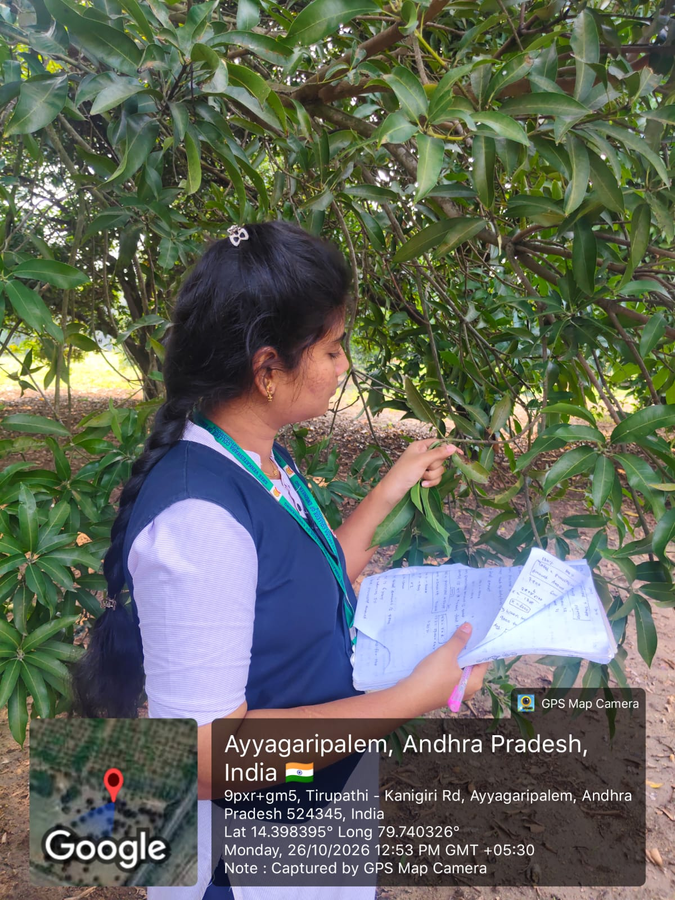
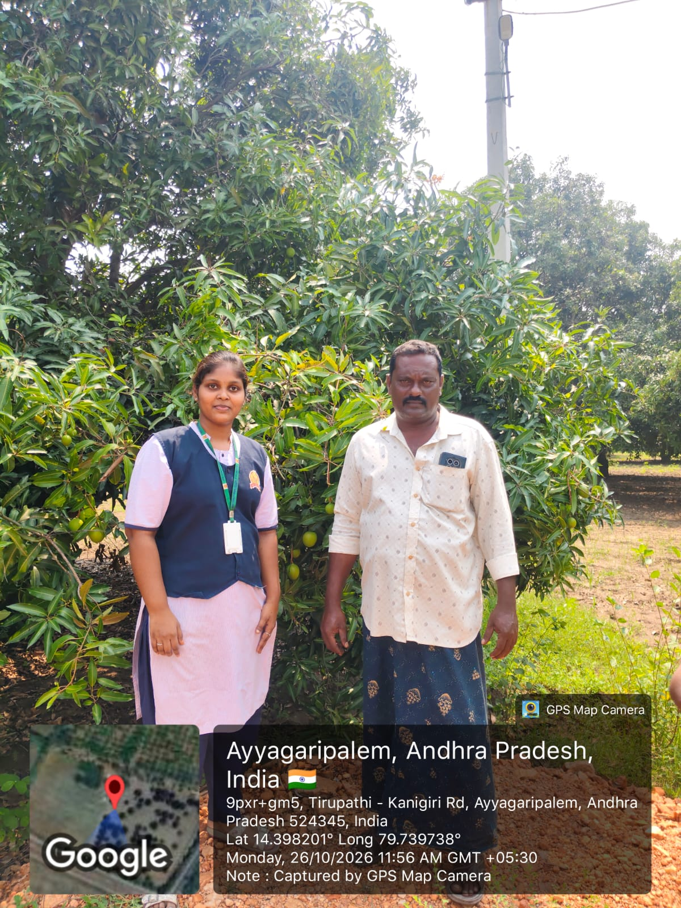
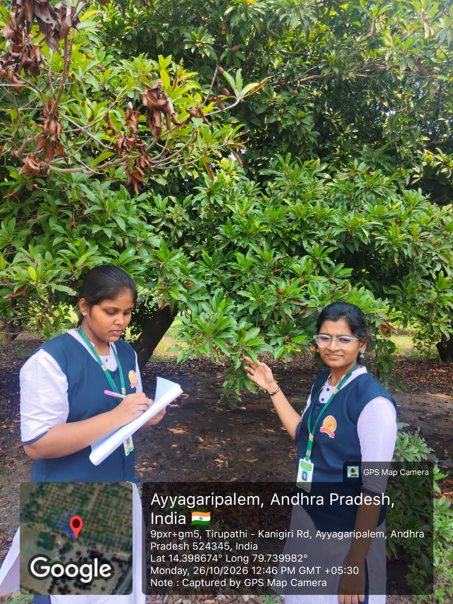
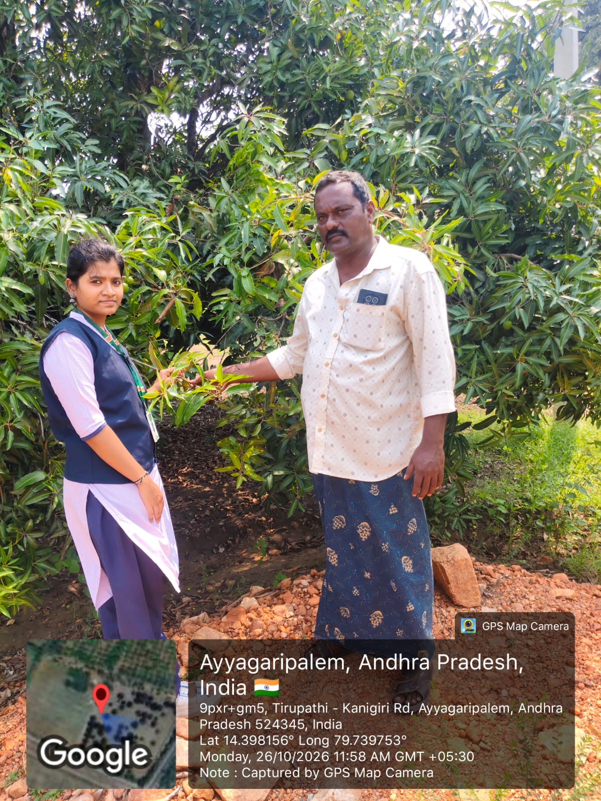
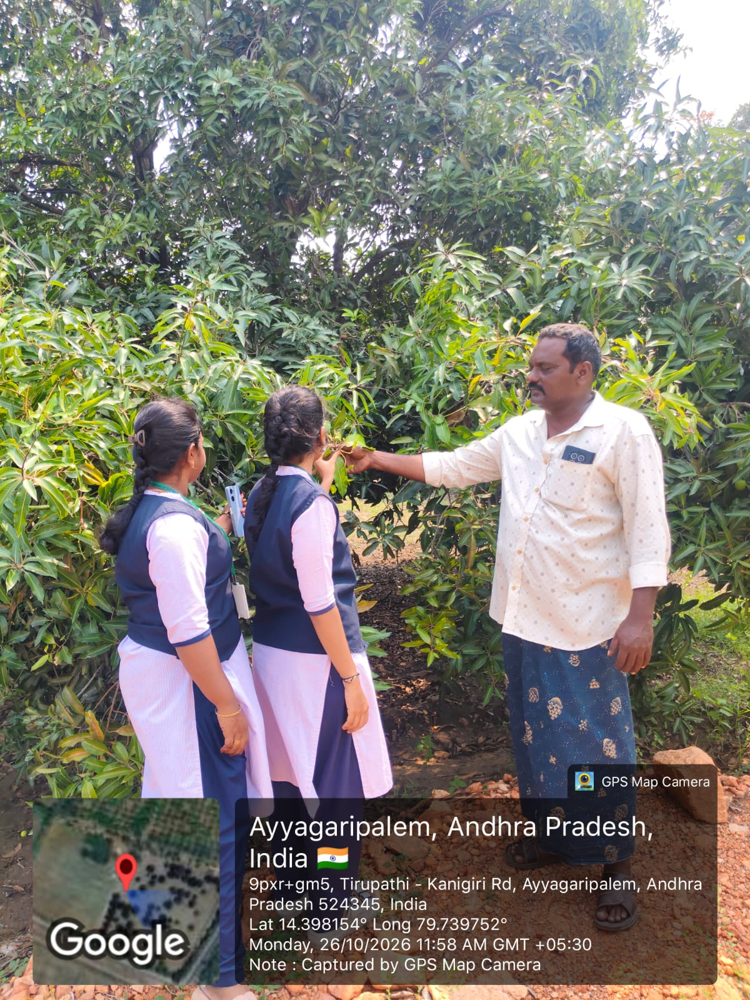
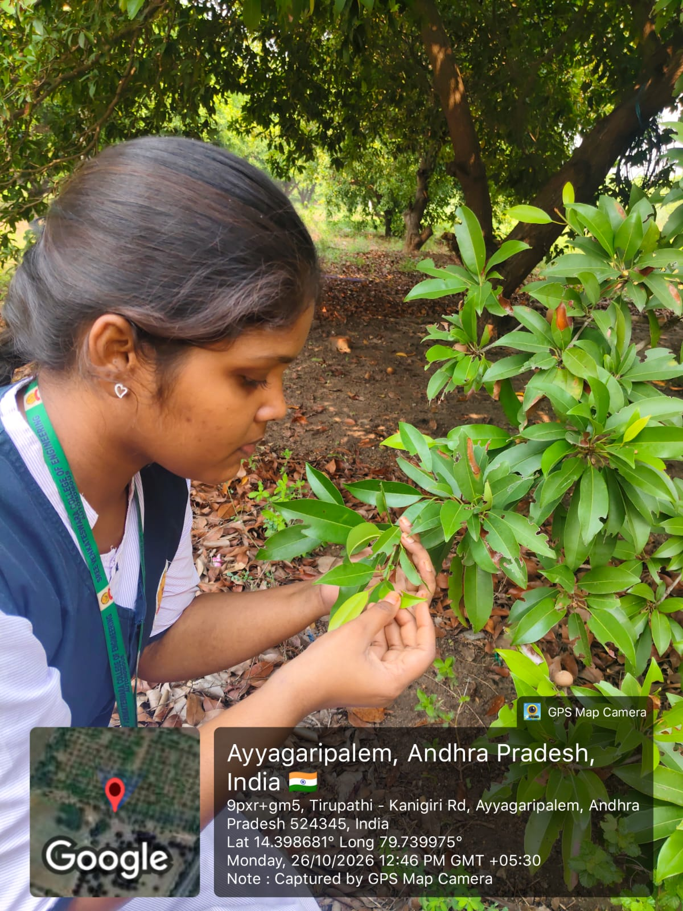
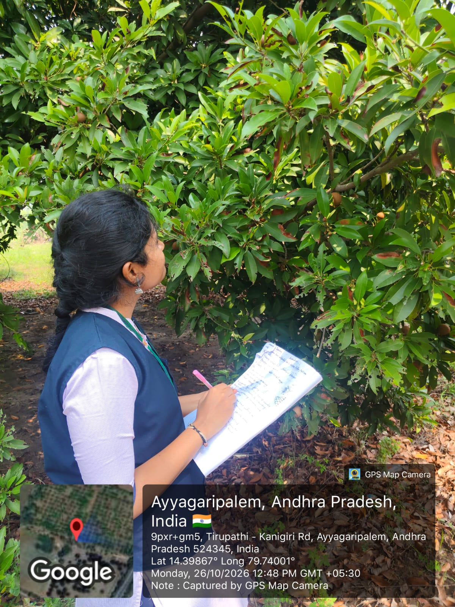
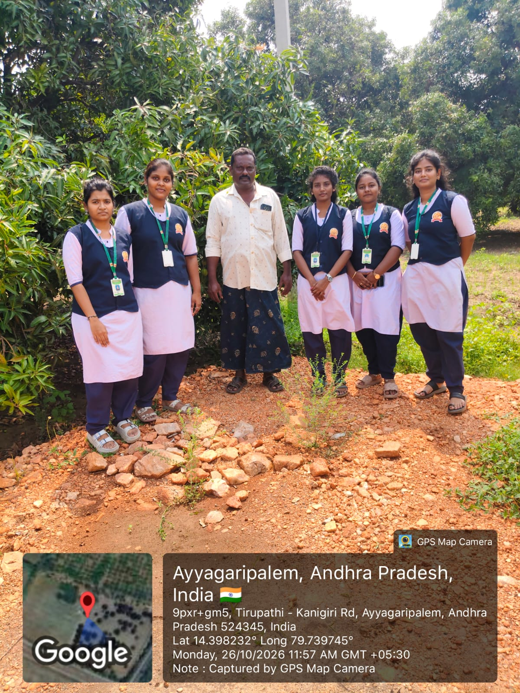
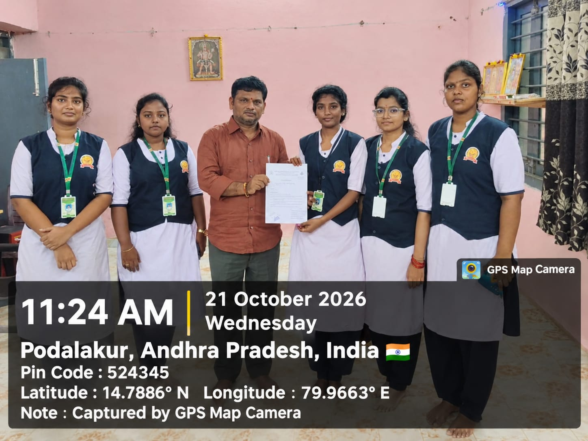
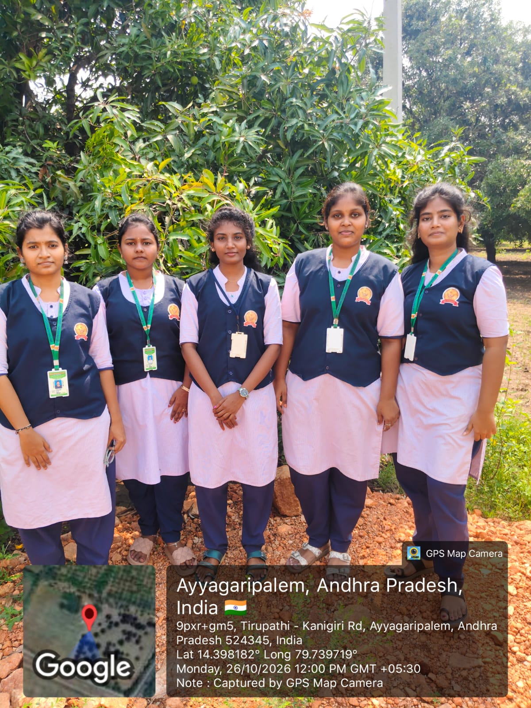

Identifying plant diseases accurately and understanding their underlying symptoms and biological causes are vital steps in preventing widespread infection and safeguarding overall plant health. When pathogens go unrecognized, minor leaf spots or wilting can quickly escalate, destroying gardens, ornamental landscapes, and vital food crops. Raising practical awareness about plant disease identification and preventive management empowers farmers, home gardeners, and local communities to take timely action—reducing crop losses, improving agricultural productivity, and fostering healthier, more sustainable green environments.
To create awareness about common plant diseases.
To understand the symptoms and causes of different plant diseases.
To explore methods for preventing and managing plant diseases.
To highlight the importance of maintaining plant health.
To promote sustainable and responsible plant care practices.
To provide basic educational information about plant disease identification.









